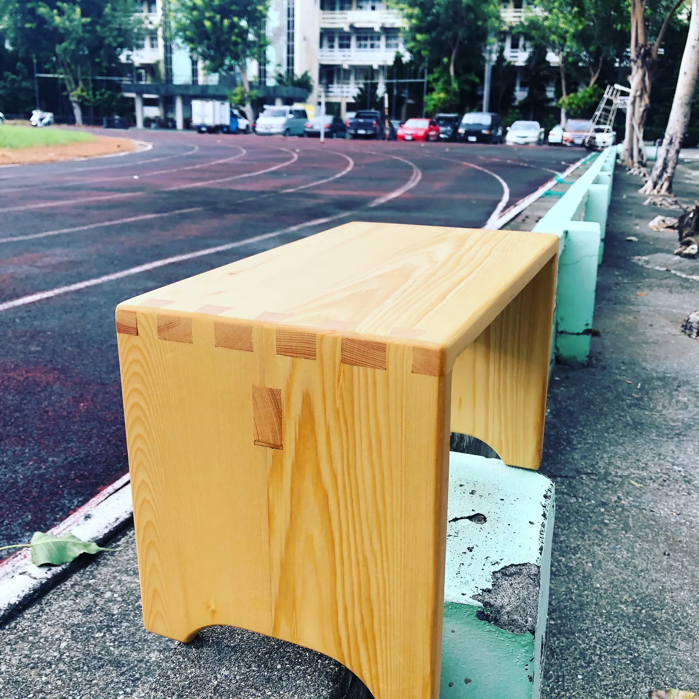

從一張為女兒做的單人床開始，慢慢愛上木工這件事。這裡記錄我做過的每一件作品， 還有製作過程中的想法、失敗與心得，也歡迎有興趣的朋友一起聊聊木工。
Cover Story
封面故事

Explore
探索網站
作品分享
看看我做過的木作家具與小物，每件作品都有材質、尺寸和製作故事。
查看作品 →木作的異想天地
製作過程的心得、想法和踩過的坑，寫給未來的自己，也寫給同樣喜歡木工的你。
閱讀文章 →聯絡我
有客製化的需求、想聊木工，或單純想打聲招呼，都歡迎跟我聯絡。
前往聯絡 →About
關於雷恩